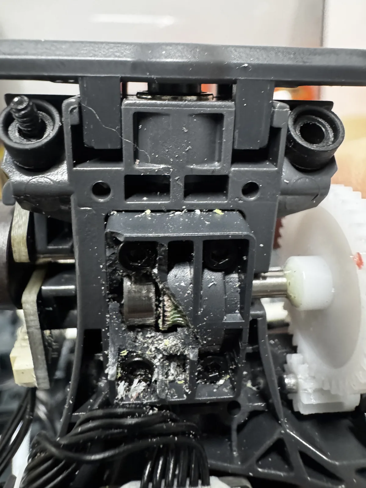
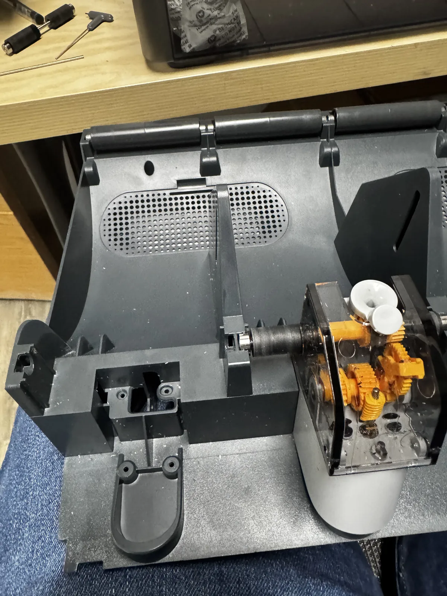
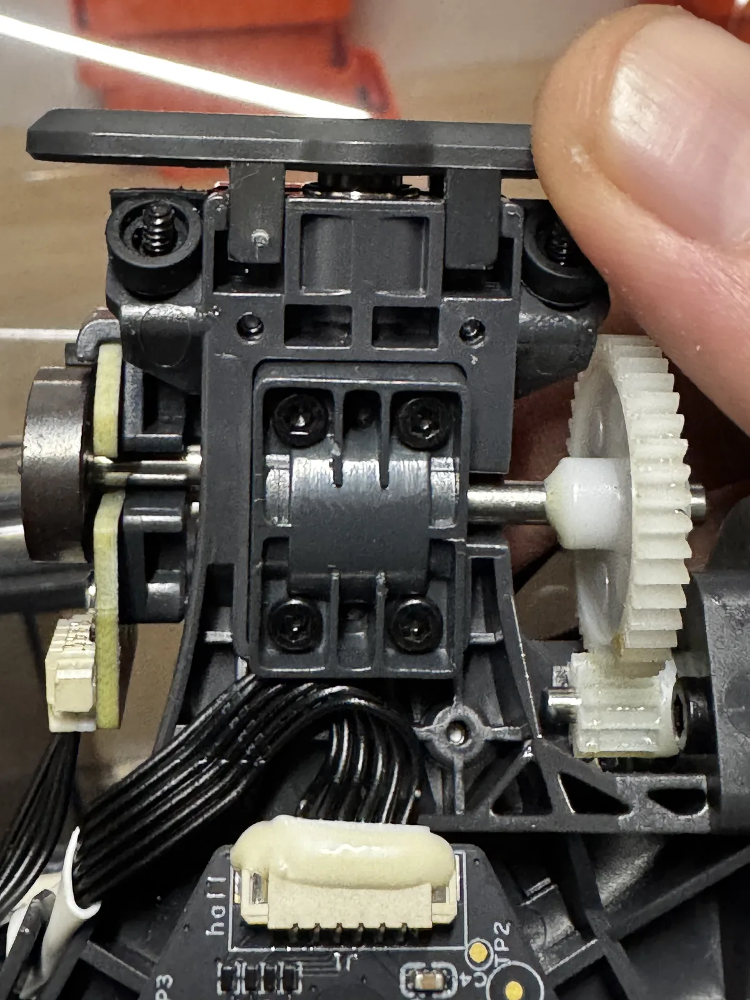
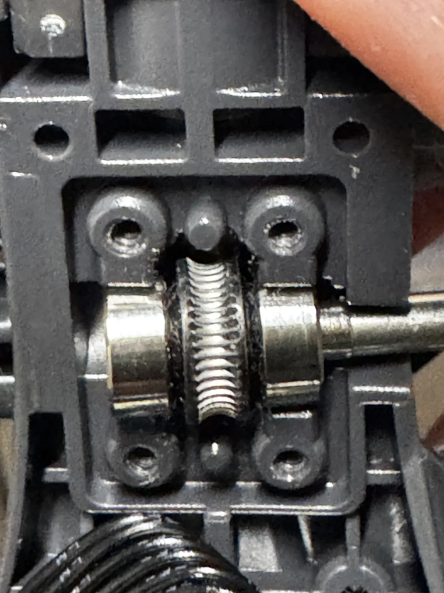
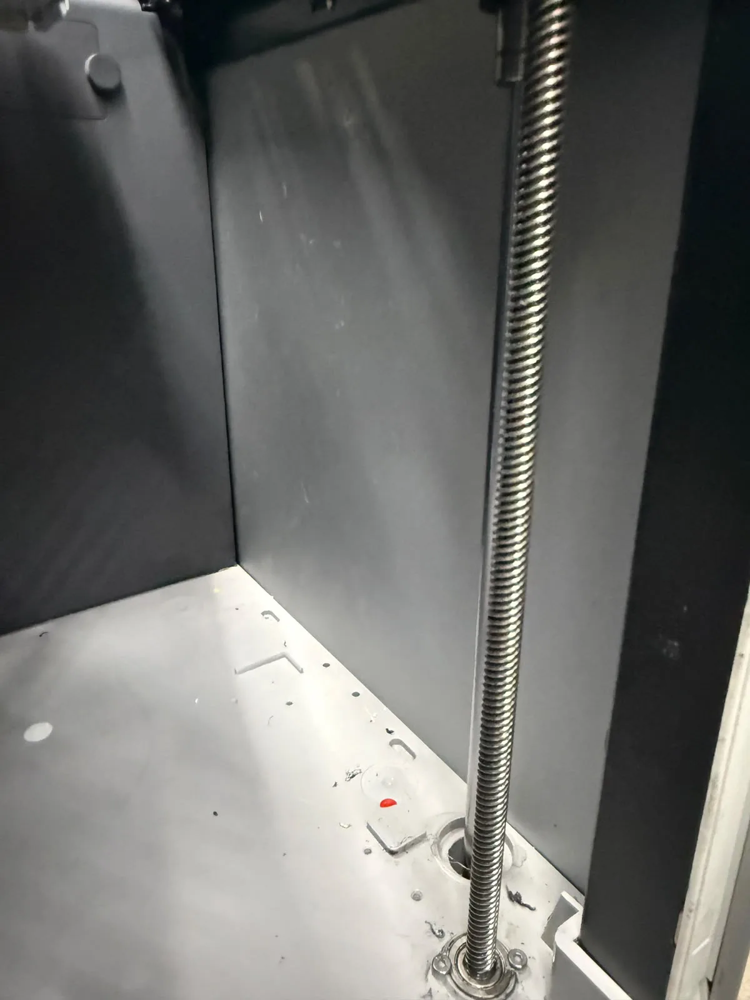
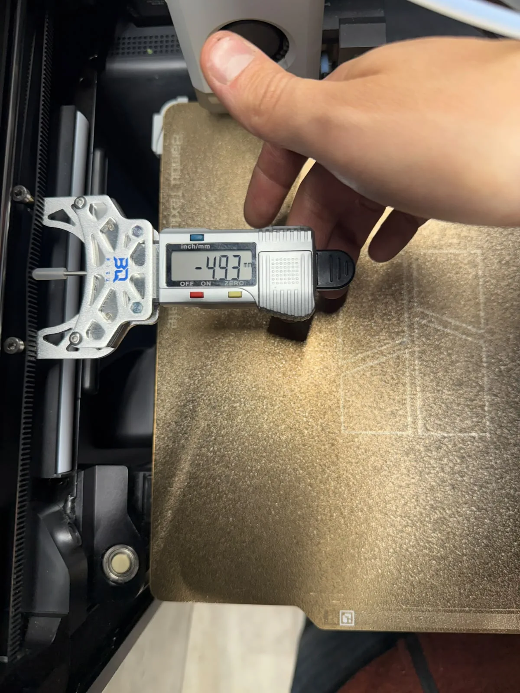

El AMS gira pero no jala el filamento: un engrane gastado en una X1 Carbon
· Caso del taller
Los rodillos giran, el carrete da vueltas, se oye que el AMS trabaja… y el filamento no llega. Así nos llegó el AMS de una X1 Carbon. El problema no era el motor, como parecía al principio, sino una pieza chica que casi nadie revisa: el engrane que da el último empujón al filamento.

El síntoma
El dueño lo describió muy claro: el AMS no jala los filamentos aunque los rodillos giren. La impresora pedía el material, el AMS hacía su ruido de siempre, pero el filamento se quedaba a medio camino y nunca entraba al extrusor de la impresora.
Es un síntoma engañoso. Como todo se mueve, lo primero que uno piensa es que el filamento está húmedo, que el tubo está doblado o que el carrete se atoró. Esas tres cosas hay que descartarlas primero, y en este caso ninguna era.

Lo que encontramos adentro
Abrimos el AMS pensando en una falla del motor. El motor estaba bien. El problema estaba en el alimentador: el engrane de extrusión del AMS estaba gastado, y al gastarse fue desgastando también la cubierta que lo sostiene, hasta que esa cubierta se rompió.
Con la cubierta rota el engrane ya no presiona el filamento con la fuerza necesaria. El AMS puede mover el carrete y subir el filamento casi todo el camino, pero le falta ese último empujón para que entre al extrusor. Por eso todo parece funcionar y aun así no imprime.
En la foto se ve el antes: plástico molido alrededor del engrane y la cubierta deshecha de un lado. Ese polvo es la pista. Si abres tu AMS y encuentras restos así junto a los engranes, ya sabes por dónde va.
La reparación
Cambiamos el engrane de extrusión del AMS y su cubierta por piezas nuevas. Antes de cerrar, revisamos que el tornillo sin fin quedara limpio y bien asentado, y que el filamento pasara con presión pareja en las cuatro ranuras.
Después vino la prueba que importa: cargar y descargar filamento varias veces y una impresión a dos colores, para que el AMS tuviera que hacer cambios de verdad.


Y ya que estaba abierta, el mantenimiento
La impresora llegó con bastantes horas encima y sin mantenimiento. Aprovechamos para limpiar los husillos del eje Z, que juntan grasa vieja y polvo, y medimos la altura de la cama en varios puntos con calibrador para confirmar que estuviera pareja. Al final corrimos la calibración completa de la impresora.
No es parte de la falla del AMS, pero una X1 Carbon con los husillos sucios termina dando otros problemas: ruido, capas marcadas o errores de nivelación. Si ya está en el banco, conviene dejarla completa.


Qué puedes revisar tú antes de traerlo
- El filamento. Que no esté húmedo ni enredado en el carrete. Un carrete que se traba hace que el AMS patine.
- El tubo PTFE. Que no esté doblado, mordido ni mal metido en sus conectores, del AMS al cabezal.
- Prueba otra ranura. Si el mismo filamento entra bien por otra ranura, el problema está en el alimentador de esa ranura, no en la impresora.
- Escucha y mira. Si el carrete gira pero el filamento no avanza en la última parte del camino, y ves polvo de plástico cerca de los engranes, es desgaste. Eso ya no se arregla limpiando.
Si llegaste al punto 4, la pieza hay que cambiarla. Lo puedes hacer tú si te sientes cómodo desarmando, o lo traes y te mandamos fotos y la cotización antes de cambiar nada.
Sigue leyendo
¿Tu impresora tiene algo parecido?
Diagnóstico en el taller con fotos de lo que encontramos y la cotización antes de cambiar cualquier pieza. Recibimos impresoras de todo México por paquetería.